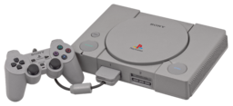
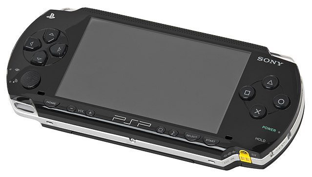
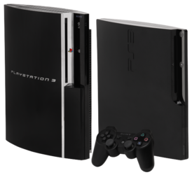
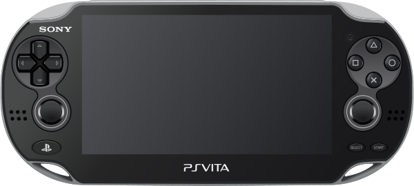
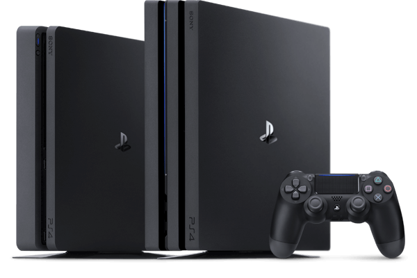
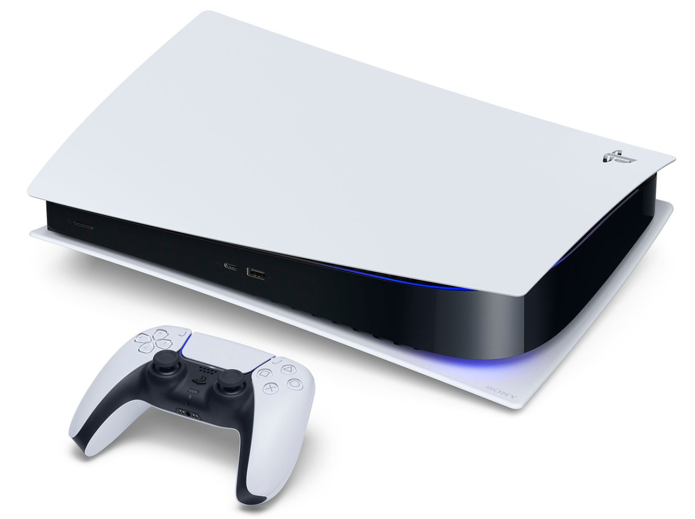

Краткое описание консолей
- Playstation
- игровая приставка пятого поколения, разработанная компанией Sony Computer Entertainment под руководством Кэна Кутараги. Релиз консоли состоялся 3 декабря 1994 года в Японии, в США приставка появилась 9 сентября 1995 года, а в Европе — 29 сентября 1995 года.
- PlayStation 2
- вторая игровая приставка, выпущенная компанией Sony, наследница PlayStation и предшественница PlayStation 3. О начале разработки было объявлено в марте 1999 г., продажа консоли в Японии началась 4 марта 2000 г., в Северной Америке — 26 октября 2000 г., в Европе — 24 ноября 2000 года, в России — 7 ноября 2002 года. Игровая приставка стала наиболее быстро продаваемой и самой популярной игровой консолью в истории. На третий квартал 2011 года в мире продано почти 155 миллионов экземпляров PS2. 28 декабря 2012 года было прекращено производство в Японии, а 4 января 2013 года Sony подтвердила, что производство PS2 прекращено по всему миру. Тем самым, PS2 выпускалась почти 13 лет, это один из самых длинных жизненных циклов в истории игровой индустрии.
- Playstation Portable (PSP)
- портативная игровая консоль производства Sony Computer Entertainment. PlayStation Portable — четвертый продукт компании Sony в линейке PlayStation. Анонс PSP состоялся на выставке E3 2003, а первая консоль была продемонстрирована публике 11 мая 2004 года на пресс-конференции, проводимой Sony в рамках E3 2004. Первые продажи консоли были начаты в Японии 12 декабря 2004 года, в Северной Америке 24 марта 2005 года, и в PAL-регионах 1 сентября 2005 года.
- PlayStation 3
- игровая приставка седьмого поколения, третья в семействе игровых систем PlayStation (не считая PlayStation Portable). С помощью PS3 можно играть, смотреть фильмы, слушать музыку, отправлять электронную почту и просматривать веб-страницы. С самого момента выпуска приставкой поддерживается большинство игр для консолей предыдущего поколения, PlayStation и PlayStation 2. Главными конкурентами консоли являются Xbox 360 от Microsoft и Wii от Nintendo. К сентябрю 2012 года по всему миру было продано 66,1 млн приставок PlayStation 3. К ноябрю 2012 года было продано более 70 млн экземпляров консоли по всему миру. К январю 2013 года было продано более 77 млн экземпляров консоли по всему миру. Количество игр, доступных для консоли, превысило 3590 штук, а общий тираж проданных игр — 595 млн копий. В ноябре 2013 года компания заявила, что общее количество проданных консолей достигло отметки в 80 млн, а портфель игр составил 4332 штуки (в их число не входят игры, которые доступны только в PSN). На апрель 2015 года Sony реализовала 87 млн экземпляров PlayStation 3 в различных модификациях — оригинальной FAT, Slim и SuperSlim. Производство PS3 было прекращено 29 мая 2017 года
- PlayStation Vita, PS Vita
- портативная консоль от Sony Computer Entertainment, преемник PlayStation Portable. Выпущена в Японии 17 декабря 2011 года, в Северной Америке и Европе — 22 февраля 2012 года. Анонсирована 27 января 2011 вместе с PlayStation Suite на PlayStation Meeting 2011. До анонса называлась PSP2, о которой (как и о PlayStation Phone) было известно по слухам от сторонних разработчиков. До E3 2011 система была известна под рабочим названием Next Generation Portable (NGP). В России консоль представили на Игромире-2011
- PlayStation 4
- игровая приставка восьмого поколения, выпускаемая японской компанией Sony. PlayStation 4 входит в семейство игровых приставок PlayStation и была выпущена на смену PlayStation 3 — предыдущей домашней игровой консоли той же компании. Официальный анонс PlayStation 4 состоялся на конференции PlayStation Meeting 2013 в феврале 2013 года, продажи начались в ноябре 2013 года в США, Европе, Южной Америке, России и Австралии и в феврале 2014 года в Японии. Осенью 2016 года Sony выпустила две новые аппаратные версии приставки: PlayStation 4 Slim, обладающую уменьшенными габаритами, и PlayStation 4 Pro, оснащённую более мощными основным и графическим процессором с расчётом на возможность вывода изображения и потокового видео в разрешении 4K.
- PlayStation 5
- игровая приставка, разработанная и выпускаемая японской компанией Sony Interactive Entertainment. PlayStation 5 является представительницей семейства игровых консолей PlayStation и преемницей PlayStation 4. Старт продаж состоялся 12 ноября 2020 года в США, Канаде, Мексике, Южной Корее, Японии, Австралии и Новой Зеландии, а 19 ноября 2020 года и в остальных регионах. Разработка была официально подтверждена в октябре 2018 года, а первые подробности появились в апреле 2019 года. Название PlayStation 5 официально было озвучено лишь в октябре 2019 года, до этого устройство обозначалось просто как «консоль следующего поколения». В отличие от своей предшественницы, PlayStation 5 вместо жёсткого диска использует модифицированный твердотельный накопитель (SSD) — включающий алгоритм сжатия и декомпрессии Oodle Kraken и систему кодирования текстур Oodle Texture. Новая подсистема ввода/вывода позволяет значительно улучшить общую производительность консоли. Также SSD теперь может быть использован в качестве виртуальной ОЗУ — таким образом PS5 располагает большим объёмом оперативной памяти, нежели заявленные 16 ГБ






